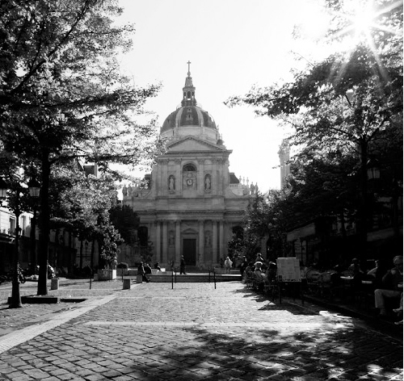

Thật kỳ lạ kiểu dẫn dắt, liên tưởng của tôi trong cuốn sách này: lòng vòng dẫn bạn đi đến những công trình, địa điểm của Paris, rồi tôi lại kể cho bạn nghe những câu chuyện về cuộc sống của tôi, bạn bè tôi. Mọi thứ tưởng chừng chẳng liên quan gì đến nhau, nhưng kỳ thực, tất cả đều liên quan, đều có nguyên do cả.
Khu phố lãng mạn
Thật ra nếu kể về Saint Michel và quartier (khu phố) Latin, về mặt không gian, địa lý mà nói thì phải kể luôn cùng với Nhà thờ Đức Bà (Notre Dame de Paris) vì chúng ở cạnh nhau, cách nhau vài trăm mét. Nhưng kể như thế thì có vẻ không đúng với trình tự thời gian và logic của riêng tôi đặt ra trong cuốn sách này. Trình tự ấy hoàn toàn tự nhiên, theo cách tôi nghĩ phải viết như thế để kể lại những câu chuyện về Paris và nhất là những câu chuyện của tôi. Còn nếu đến du lịch Paris, bạn đừng đi đúng theo trình tự những địa điểm trong cuốn sách này nhé, sẽ phải trả oan thêm mấy cái vé xe bus hay metro đấy.
Ở khu Saint Michel và khu phố Latin thật ra không có công trình kiến trúc nào cực kỳ nổi tiếng cả. Nhưng cũng như bất cứ một khu phố nào khác ở Paris, luôn có vô số những cảnh đẹp về kiến trúc, về văn hóa và con người. Đó là một khu vực nằm trên quận 5 và sát quận 6 của Paris, nơi đặc biệt có rất nhiều trường đại học, nổi tiếng nhất là khuôn viên của Đại học Sorbonne, được coi là trụ sở các trường đại học của Paris, một tòa nhà không quá lớn nhưng cổ kính và rất đẹp. Đặc biệt “trái tim” của khu phố này là Panthéon, vốn là nhà thờ hoàng gia, đã và đang được dùng như ngôi đền của những người nổi tiếng, những người đã ghi dấu ấn trong lịch sử nước Pháp, những nhà khoa học, nhà văn thơ nổi tiếng như Pierre và Marie Curie, như Alexandre Dumas… Nếu có thời gian sau khi đã thăm những điểm du lịch không thể bỏ qua của Paris, bạn đừng quên Panthéon. Có thể kiến trúc bên ngoài của nó không quá nổi trội, nhưng khi lọt vào bên trong bạn chắc chắn sẽ phải trầm trồ.

Đại học Sorbonne. (Ảnh: Tác giả)
Nói đến khu phố Latin là nói đến những đặc trưng của nó: những con phố nhỏ, thậm chí là rất nhỏ, có nơi chỉ đủ để hai người đi bộ tránh nhau, mặt đường ở nhiều nơi vẫn còn giữ nguyên như thời xưa: đường lát đá vòng cao lên ở giữa, hai bên là hai rãnh cho bánh xe ngựa chạy vào. Khu phố Latin cũng là nơi tấp nập các cửa hàng quần áo, đặc biệt là hàng ăn, quán cà phê, quán bán đồ ăn vặt, ăn nhanh.
Tôi yêu thích khu phố Latin từ khi mới đặt chân đến Pháp vì vẻ vui nhộn xen lẫn những nét lãng mạn của nó. Sau này cùng với “bến bờ” của mình, chúng tôi càng hay trở lại nơi này. Cũng vì cái đêm sau lời tỏ tình của tôi, chúng tôi rời bờ sông Seine, chọn một quán ở vị trí thật đẹp vừa nhìn ra sông, vừa nhìn ra quảng trường Saint Michel tấp nập. Ngồi rất lâu, ngồi cả đêm, đến gần sáng đứng dậy trả tiền, mới phát hiện ra tên quán là “Le départ” có nghĩa là điểm bắt đầu, điểm xuất phát. Cả hai cùng cười cho sự trùng lặp ngẫu nhiên, và coi đó giống như là điểm xuất phát cho cuộc hành trình rất nhiều năm (và còn nhiều năm nữa) của mình. Bây giờ cái quán vẫn còn ở đó, vẫn tên đó và chúng tôi, những buổi tối có thời gian rảnh để đi chơi, sau một hồi dạo quanh khu phố Latin, hay trở lại điểm xuất phát ấy để ôn lại những kỷ niệm đẹp, để cùng nhau bắt đầu những dự án mới hay chỉ đơn giản là những chương mới của một câu chuyện tình yêu.
Câu chuyện của đêm Valentin kỳ lạ
Và câu chuyện trong chương này của tôi cũng bắt đầu từ một buổi tối như thế, nhưng đặc biệt hơn: một buổi tối của lễ tình nhân, ngày lễ Saint Valentin.
Hồi ấy chúng tôi đã lấy nhau rồi, nhưng cả hai vẫn còn là sinh viên. Sau hơn một năm yêu nhau, khi em kết thúc khóa học MBA ở Anh, tôi không muốn em trở lại Việt Nam để phải tiếp tục xa cách và chúng tôi cùng quyết định: em sẽ sang Pháp. Sang Pháp lại là một thử thách mới, lại phải học tiếng Pháp từ đầu, lại vừa học vừa đi làm thêm. Lúc ấy tôi đã học xong khóa MBA của mình, nhưng cũng như em, tôi chỉ nói tiếng Anh, tiếng Pháp thì bập bẹ tự học vì có bao nhiêu thời gian rảnh đều phải đi làm. Tôi vừa đăng ký vào một trường cao học hệ tiếng Pháp để lấy thêm bằng cao học chuyên ngành tài chính, vừa là học thêm tiếng Pháp.
Em sang Pháp một thời gian thì chúng tôi cưới nhau, khi cả hai đã chắc chắn tìm thấy một nửa của mình, và vì cả hai gia đình đều không muốn hai đứa ở với nhau mà không có cưới xin. Thế là một đám cưới thật nhỏ, thật đơn giản với hơn chục người bạn và mẹ của em sang đại diện hai gia đình. Cưới xong chúng tôi tranh thủ về Việt Nam ra mắt gia đình, họ hàng, rồi lại đi (Đó cũng là lần đầu tiên tôi về thăm nhà, năm năm sau ngày đi).
Khi ấy cả hai còn nghèo lắm. Thật ra thì gia đình em có điều kiện kinh tế, nhưng cả hai chúng tôi đều quen sống tự lập, không thích dựa vào gia đình, nên quyết tâm tự mình xoay xở, bắt đầu từ hai bàn tay trắng. Chúng tôi đều đi học và đi làm thêm, đi học đi làm nhiều đến nỗi, ở chung nhà, ngủ chung giường nhưng có khi cả tuần không nói chuyện gì với nhau: khi tôi đi làm về đến nhà thì đã hai, ba giờ sáng, em đã ngủ, khi em thức dậy lúc năm giờ sáng để đi làm sớm rồi đi học thì tôi còn đang ngủ. Cứ thế cả tuần mới có một buổi tối cả hai cùng tan việc sớm để gặp nhau. Trong tuần nếu có gì cần trao đổi thì chúng tôi viết giấy dán lên cửa tủ lạnh (điện thoại di động cũng chưa có mỗi người một cái). Những dòng viết vội Em yêu, sáng mai anh sẽ nấu món em thích nhé; Chiều nay em tan học muộn, không kịp đi chợ. Em nhớ anh dán trên tủ lạnh trở thành cách trao đổi yêu thương, thành động lực cho cả hai vượt qua những nỗi “đời thường”. Cứ cuối tuần, tôi gom những mẩu “Post-it” dán trên tủ lạnh ấy lại thì có thể tóm tắt được các “sự kiện” lớn nhỏ của cả tuần: ai đi chợ, ai nấu món gì, con mèo bị ốm, mẹ tôi ở nhà phải vào bệnh viện, em đi thi làm bài không tốt… Tôi nghĩ một ngày có thể tôi sẽ viết một cuốn “tiểu thuyết” nhỏ chỉ bằng nội dung của những mẩu post-it như thế.
Tối hôm ấy cả hai cùng về sớm. Lại là 14 tháng Hai. Tôi chạy vội về nhà, định rủ em đi ăn ngoài hàng thì em đã nấu cơm rồi. Vì thế cả hai lại cùng ngồi ăn, rồi đi dạo phố. Lại đến khu phố Latin, lại cùng nhau đi “liếm cửa kính” các cửa hàng sang trọng, ngắm người xe tấp nập, nói với nhau những câu vu vơ gì đó rồi cùng cười vang. Bỗng ngang qua một cửa hàng, thấy cái áo da thật đẹp, tôi bảo: “Áo này hợp với em đấy, mua nhé”. Thật ra lúc bình thường, chẳng bao giờ chúng tôi mua đồ ở khu du lịch ấy, giá đắt ít nhất là gấp đôi những chỗ khác. Nhưng khi ấy chúng tôi đang hân hoan, tràn ngập trong tình yêu, đang say sưa, đang bị cái thằng (hay cái con) tình yêu không biết rõ mặt dẫn lối, nên thậm chí chẳng để ý đến điều đó. Cả hai cùng vào, em thử, anh ngắm, chú bán hàng đứng tán, quyết định mua. Rồi chú bán hàng lại bảo: “Sao không mua luôn cho Monsieur (quý ông) một cái? Có loại dành cho nam, màu giống thế”. Em bảo: “Ừ nhỉ, lâu rồi anh cũng không mua gì”. Thế là anh thử, em ngắm, chú bán hàng tán thêm vào, mua cái thứ hai. Thành đồng phục nhé, hâm thật. Mua xong ra đến phố, chú bán hàng đứng sau trầm trồ “Oh, les amoureux. C’est mignon” tạm dịch là “Ôi, những kẻ đang yêu, thơ mộng (hay đáng yêu) quá” nhưng nếu hiểu theo đúng khung cảnh lúc ấy thì ý chú muốn nói là “Haha, lũ ngốc mơ mộng, thật tội nghiệp” hay cái gì tương tự thế vì sau này chúng tôi biết mình mua giá đắt gần gấp đôi. Chẳng sao, hai kẻ đang yêu tiếp tục đi, tiếp tục mơ mộng.
Qua khu phố nhỏ với các nhà hàng kiểu Latin với những xâu thịt nướng, cá nướng thật bắt mắt, với nhạc sống réo rắt, với phong tục mỗi khách ăn xong ra cửa thì đập một cái đĩa để lấy may mắn, chúng tôi lại dừng lại, ngắm nghía. Một chú bán hàng lại hiện ra mời chào. Ừ thì vào ăn thử, đi một lúc có vẻ đói, cái chính là nhìn khung cảnh nhà hàng lãng mạn quá, không cầm lòng được. Nhưng thật ra, đói con mắt thế thôi, chứ vừa cơm tối xong, ăn gì nữa. Hai suất ăn dọn ra, đầy ắp. Hai đứa nhìn nhau cười, gần như không đụng đến một miếng. Chú bồi bàn đừng nhìn, lại kêu “Oh, les amoureux. C’est mignon. Nhìn nhau là đủ no rồi, chẳng cần ăn gì nữa”. Cũng không hẳn thế. Nếu đói thì vẫn ăn như thường. Nhưng lúc ấy thì biết làm gì nữa, lại cũng hơi ngượng, không dám xin cho vào hộp mang về.
Đi dạo chán, chúng tôi lại ra quán “Le départ” ngồi ngắm phố. Ngắm đến lúc chợt nhớ ra phải về cho kịp chuyến tàu cuối mới cuống cuồng trả tiền rồi chạy. May sao vẫn kịp chuyến cuối cùng. Về đến bến nhà mình đã gần hai giờ sáng. Ga nhà tôi có hai lối ra, một lối phụ gần nhà hơn thì bị đóng từ sau mười một giờ đêm. Chúng tôi biết thế. Ai đi tàu về đến đó vào giờ đó cũng đều biết thế. Lại có cả tấm bảng to tướng thông báo nữa. Nhưng chúng tôi đang mải chuyện, mải cười, mải nhìn nhau nên theo thói quen dắt nhau xuống đường hầm dẫn ra cổng phụ. Có anh nhân viên trực ở ga chắc cũng chỉ đợi chuyến tàu cuối đến, đợi không còn ai trên đường ra cổng chính thì vội vã đóng cửa đi về, Valentin mà. Biết đâu có hai kẻ mơ mộng còn đang hớt hải chạy ngược lại đường hầm để ra cổng chính. Vậy là tự nhiên chúng tôi bị nhốt ở trong ga, kêu gào mãi chẳng ai nghe thấy. Leo cầu thang lên cạnh đường ray, nhìn xuống đường. Từ chỗ chúng tôi xuống đường khá cao, kể ra nếu có mình tôi thì tôi sẽ trèo tường xuống ngay. Nhưng có em thì không thể. Chúng tôi đành gọi cứu hỏa. Phải giải thích với bạn rằng ở Pháp, lính cứu hỏa không chỉ có nhiệm vụ chữa cháy. Không có nhiều đám cháy đến thế. Mà lính cứu hỏa thì cơ động, được trang bị đầy đủ cho các trường hợp cấp cứu, nên có gì khẩn cấp người ta đều gọi lính cứu hỏa. Chúng tôi chơi bóng đá, nếu có ai chấn thương, ngã trẹo chân tay hay mệt quá ngất xỉu là gọi lính cứu hỏa. Ngoài phố có ai bị ngã, gọi lính cứu hỏa. Thậm chí có con mèo kẹt trên mái nhà, người ta cũng gọi lính cứu hỏa. Thông thường thì họ đến rất nhanh. Chúng tôi gọi lính cứu hỏa. Họ hỏi đầu đuôi câu chuyện. Tôi kể lại. Tất nhiên không dại gì mà bảo là vì mải chuyện, mải nhìn nhau mà không nhìn thấy biển thông báo lối ra đã bị đóng cửa, nhưng vì nghĩ lại cảnh ấy buồn cười quá không nhịn được cười. Đợi mãi không thấy ai đến. Chắc họ không tin chuyện của tôi, hoặc vì tôi cười mà họ cho là tôi đùa. Thỉnh thoảng cũng có kẻ dỗi việc, gọi đùa như thế. Đợi chán không được, tôi đành phải gọi cho cậu em vợ, hồi ấy mới sang đây du học, còn đang ở nhà tôi, vác cái thang ra “ứng cứu”. Ba giờ sáng, ông em ngái ngủ vác thang ra giải cứu hai anh chị rét cóng ngoài ga. Nhưng bà chị mặt đỏ tưng bừng, ngượng nghịu vì lý do bị nhốt trong ga nghe có vẻ hơi “ngớ ngẩn”. Thế là cậu em lại buông một câu “Oh, les amoureux. C’est mignon”, ý bảo ôi những kẻ yêu nhau, thật “đáng yêu” quá đi.
Thế nào mà trong một buổi tối, có đến ba người cùng bảo chúng tôi câu ấy, trong những hoàn cảnh khác nhau. Chẳng biết cái cậu bé (hay cô bé) tình yêu có vẽ gì đánh dấu lên mặt chúng tôi, hay là bay lượn vòng vòng trên đầu chúng tôi với cái băng dán dòng chữ ấy không mà ai cũng để ý. Nhưng có lẽ tình yêu là như thế. Chỉ khi yêu người ta mới có, mới gặp những chyện kỳ lạ, ngớ ngẩn mà đáng yêu đến thế.
Và ngày Valentin xin dành cho mẹ
Tôi về đến nhà, không ngủ ngay. Tôi nghĩ đến mẹ. Lạ nhỉ, ngày Valentin mà nghĩ đến mẹ. Tôi bỗng chợt nghĩ rằng mẹ tôi chẳng bao giờ biết đến ngày Valentin, đến những câu chuyện lãng mạn, đáng yêu kiểu như thế hoặc có thì cũng ít lắm. Ba mẹ thuộc lớp người cổ, hoặc vì có chúng tôi muộn nên từ khi chúng tôi biết nhận thức mọi chuyện, đã thấy ba mẹ gọi nhau là “ông, bà” xưng tôi rồi… Ba mẹ đối với nhau như những cặp vợ chồng tôi đọc trong truyện cổ: tôn trọng, nhã nhặn, chăm sóc, yêu thương nhau nhưng không thể hiện nhiều, nhất là bằng lời nói. Tại mẹ sinh tôi muộn quá chăng, nên khi tôi bắt đầu biết nhận thức thì ba mẹ đã già rồi? Tôi nghĩ mẹ tôi từ khi lấy chồng chẳng mấy khi được hưởng cái gọi là lãng mạn.
Ba mẹ yêu nhau khi đất nước còn chia cắt, chiến tranh. Yêu nhau đơn giản thôi, thời xưa thế. Có muốn thể hiện cũng chẳng dám, sợ mọi người đàm tiếu, sợ tổ chức liệt vào dòng “tư sản” hay nhắc nhở vì gây dư luận. Mà cũng đâu có thời gian hay điều kiện gì nhiều. Nhưng ít ra hồi ấy chắc mẹ còn thỉnh thoảng được hưởng vài giây phút lãng mạn. Nghe ba kể là hồi ấy ba đang đi thực tập ở Hải Phòng. Chủ nhật ba đạp xe hơn 100km lên Hà Nội để xem đá bóng (niềm đam mê lớn nhất của đời ba) nhân tiện ghé qua ký túc xá của mẹ (hồi ấy ba mẹ còn đang “cưa cẩm” nhau), nói rằng đạp xe lên thăm mẹ, để được gặp nhau một chút. Mẹ xúc động lắm. (Dĩ nhiên trong hoàn cảnh đó, không ai dại gì mà nói thật lý do.) Lãng mạn thế còn gì nữa. Chỉ thế thôi có lẽ cũng đã là những giây phút đẹp nhất trong tình yêu của ba mẹ.
Chưa lấy nhau thì mẹ đã phải chăm ba trong bệnh viện đến cả năm trời. Hồi ấy ba ở chung phòng trọ với một người bạn, chẳng biết chú ấy nấu nướng thế nào, đang nấu bếp dầu thì hết dầu, mang can dầu ra tiếp thêm vào mà không tắt lửa đi. Loay hoay làm sao lửa bắt vào can dầu bùng lên, ba nhảy vào cứu không được, chú ấy mất còn ba bị bỏng nặng, nhiều chỗ cháy đến tận xương.
Lấy nhau rồi thì ba đi bộ đội, mà bộ đội đặc công, đi biệt luôn. May mà rồi người ta phát hiện ra ba bị bệnh xoang, không đảm bảo cho các trận đánh (đêm hôm đào hầm vào đánh đồn mà ông lại lên cơn hắt hơi cho mấy cái thì nguy) nên trả về chứ nguyên đại đội của ba được điều đi đánh trận ở thành cổ Quảng Trị, chẳng còn ai trở lại.
Sinh con đầu lòng đúng đêm giặc Mỹ đánh bom khu phố Khâm Thiên, sinh con út ngay sau giải phóng, những giai đoạn khó khăn vất vả nhất của đất nước, ba mẹ tôi cũng gồng mình, bươn trải đấu lại cái đói, cái nghèo. Nếu các bạn đã đọc những câu chuyện “ăn uống” của tôi ở chương trước, bạn có thể cảm nhận được những khó khăn của gia đình tôi khi ấy, không chỉ khó khăn về miếng ăn mà còn khó khăn cả chỗ ở. Nhà tôi được viện thiết kế của ba phân cho ngôi nhà cấp bốn, chia đôi chung với một hộ gia đình khác. Phần của gia đình tôi chỉ có 9m2, cơi nới thêm một phần 9m2 nữa làm bếp và chỗ ăn cơm, phòng khách… và đủ kê một tấm ván hẹp, vừa đủ cho ba nằm ngủ mỗi đêm, ba mẹ con tôi ngủ chung một giường. Sau này tôi lớn một chút, thường thì thầm hỏi chị tôi: ba mẹ có ngủ chung bao giờ không nhỉ? Ba mẹ “tâm sự” vào lúc nào nhỉ? Hai chị em ngớ ngẩn nhìn nhau, không biết, tuyệt nhiên không tìm ra một khoảng thời gian nào là “có thể” để ba mẹ chia sẻ những khoảnh khắc riêng tư với nhau, thậm chí nói chuyện riêng cũng khó. Ấy là tôi chưa kể đến cái vách ngăn giữa nhà tôi và nhà hàng xóm, bằng cót ép, mỏng đến mức bên kia thở mạnh bên này cũng nghe rõ, hoặc tôi lấy móng tay cậy cậy một chút là có cái lỗ nhìn sang bên kia xem nhờ ti vi.
Không có không gian riêng tư, ba mẹ cũng chẳng có thời gian cho những lãng mạn, yêu thương. Mẹ tôi làm công việc hành chính ngày tám tiếng, xong còn làm “kế hoạch 3” - làm thảm cói, may vá tăng thu nhập cho cán bộ, ba tôi ngoài giờ làm việc còn nhận công trình tư làm thêm để phụ vào chi tiêu. Về đến nhà mẹ còn cơm nước giặt giũ, dù hai chị em tôi cũng tham gia việc nhà từ bé nhưng bữa cơm chẳng bao giờ thiếu bàn tay của mẹ.
Mãi đến khi tôi 15 tuổi, nhà tôi mới có điều kiện để mua miếng đất nhỏ xây ngôi nhà của mình, lúc ấy thì có thể có phòng riêng cho ba mẹ, nhưng ba mẹ khi ấy đã bắt đầu có tuổi rồi, mẹ tôi bị chứng mất ngủ, tóc bạc trắng. Đêm mẹ không ngủ được, cứ xoay qua xoay lại làm ba cũng mất ngủ theo, vì thế ba ngủ một mình dưới nhà, để trông nhà luôn, còn mẹ ngủ trên gác, cạnh phòng tôi, để đêm hôm khó ngủ mẹ còn gọi tôi chạy sang đấm lưng, bóp chân cho dễ ngủ.
Ba mẹ không kỷ niệm ngày cưới, ngày yêu nhau cũng theo những bộn bề công việc và lo toan cuộc sống mà quên bẵng đi. Ngày sinh nhật của các con thì ba mẹ lo để con mời bạn đến nhà, chứ của ba mẹ thì ba mẹ chẳng bao giờ nhớ, chỉ có các con mua hoa, tặng quà hay mua món gì về cả nhà ăn. Cái vất vả đời thường cùng những trói buộc, câu nệ của một thời khốn khó đã làm mờ đi cả những âu yếm, yêu thương giản dị nhất của một cặp vợ chồng. Sao lại thế chứ? Tôi lại thì thầm hỏi chị tôi “Có bao giờ chị nghe thấy ba bảo mẹ ‘Anh yêu em không?”’ Hai chị em lại nhìn nhau, ngớ ngẩn cười và lắc đầu.
Tôi nghĩ rằng ngày Valentin, nếu là ngày để thổ lộ, để thể hiện tình yêu thì tôi sẽ dành ngày ấy tặng ba mẹ, cho một đời vất vả lo lắng của ba mẹ. Nếu ở nhà ngày này, tôi chắc sẽ giục ba mua hoa tặng mẹ, hoa tươi hẳn hoi, vì cũng có lúc ba tặng mẹ hoa vào ngày 8-3 chẳng hạn, nhưng là hoa “đồng tiền”. Ba tôi chuyên lấy cái đũa chẻ ra một đầu, kẹp vào đấy hai tờ tiền làm hoa rồi đưa mẹ, cười hề hề: “Tôi mà mua hoa thì thế nào bà cũng kêu mua đắt, rồi lại bảo thà đưa tiền đây tôi mua con gà luộc lên ăn.” Ba ơi, mẹ ơi, hoa trong những ngày ấy có thể đắt thật, nhưng chẳng sao cả, bông hoa ấy chỉ là cái cớ để ta thể hiện tình yêu, để ta nói lời yêu. Không có hoa cũng được, nếu đột nhiên ba cầm tay mẹ mà nói lời yêu thì cảm giác có khi còn mạnh mẽ gấp mấy lần tặng hoa. Phải nói chứ, đến bạc đầu cũng nói, nếu ta yêu nhau thật lòng.Người đời không cười đâu. Nếu có cười thì mặc họ.
Không, không ai cười những người yêu nhau, người ta sẽ nói: “Oh les amoureux. C’est mignon.”